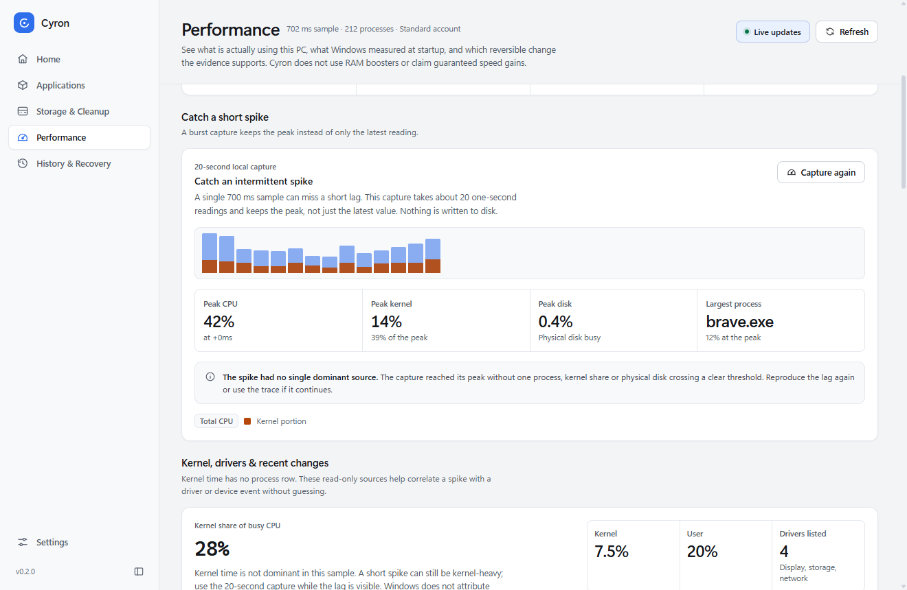
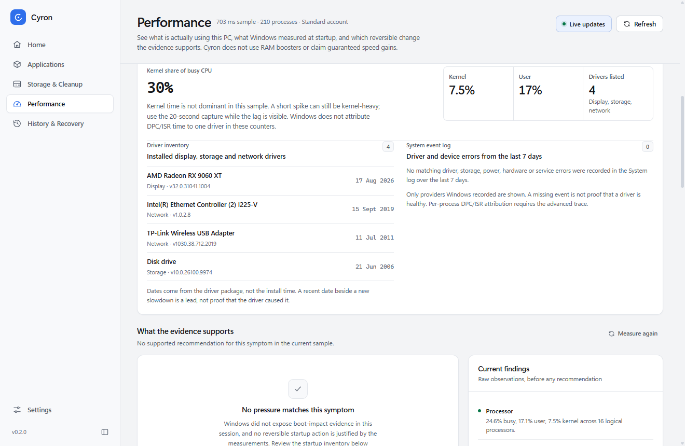

Exact targets
Every command, path and registry key is listed before the plan becomes usable.
Windows 10/11 x64 · v0.2.0-rc.2
Remove the app, find what it left behind, clear the caches your AI tools quietly filled, and see what your PC is actually doing — before anything changes. One calm utility instead of five noisy ones.
Review-first · recoverable cleanup · AI & IDE cache review · no telemetry · no RAM-booster claims

Review first
Cyron builds a server-held plan, shows the exact files and registry keys, and executes only after you confirm. Cleanup is recoverable by default.
Every command, path and registry key is listed before the plan becomes usable.
Files move to a journaled quarantine with no-overwrite restore, not silent deletion.
Confirmations expire, cannot be replayed, and are revalidated against the live system.
No account, no analytics, no network client. Your inventory and traces stay on the PC.
The scan reads the filesystem and reports what exists.
Exact paths, risk and expected effect appear in a plan.
An approved run journals each move before it happens.
Put a batch back at any time; existing files are never overwritten.
One utility
Uninstall, explore, clean, diagnose and recover without handing your PC to a black box. Scroll through the work.
Win32, Store, Steam and portable apps in one inventory. Batch runs only what has a registered vendor uninstaller, and leftover files are reviewed separately.
A treemap and virtualized tree expose the folders behind a full drive. NTFS MFT scanning is used when elevated; a streaming walk covers the rest.
Developer and AI caches are mapped to documented provider paths, then shown for review. Conversation history, credentials and model data stay protected.
A 20-second capture keeps the peak instead of the latest reading. Kernel time has no process row, so Cyron adds driver versions and recent System events.
Illustrative treemap. Allocation is measured; no sizes are claimed here.
Steps 01–03 are interface illustrations. Step 04 is a real capture.
Built for the agent era
AI-assisted building leaves a very specific kind of bloat: caches nobody prunes, build output from a branch you abandoned, and model weights you forgot downloading. Cyron maps the locations it can prove — and refuses to touch the ones that are actually your work.
Known provider paths are measured read-only. No package manager runs, no shell.
Each entry shows what it is, why it exists and what happens if it goes.
Approved files move to a journaled quarantine you can restore.
Your tools repopulate what they need — without the mystery folder you never found.
Measured, not marketed
A directory walk is Cyron's fallback when the MFT is unavailable, and it is still quick. These are the actual medians from one Windows machine, published with the method.
to count 20,557 files and 12.1 GiB
Median of 3 runs · directory walkWarm OS cache, unelevated, median of 3 runs. These are Cyron-only measurements; no competitor was installed or timed. Bar length is the measured median. Method and environment →
Honest comparison
Revo, BCUninstaller, WizTree and BleachBit are good at their jobs. This is a documentation-based capability table, not a speed ranking.
We did not install or time Revo, BCUninstaller, WizTree, TreeSize, BleachBit, Microsoft PC Manager or Sysinternals. The only timed column below is Cyron.
Swipe or scroll the table to see every tool →
Legend: Yes = documented or implemented, Partial = limited or needs configuration, Reported = third-party report, not verified from the official page, Not verified = not established from the cited source, Not run = no same-machine test. Cyron cells describe this repository and its evidence, not a claim of superiority.
For the late-night spike
Kernel time has no process row. Cyron shows the kernel share of busy CPU, the application time it does not explain, driver versions and recent System events.

Windows 10/11 x64
Cyron 0.2.0-rc.2 is a testing candidate. Download it, review the plan, and keep the quarantine until you are sure.
Unsigned testing candidate. Windows may warn and SmartScreen has no reputation for it. This is not a publicly trusted production release.